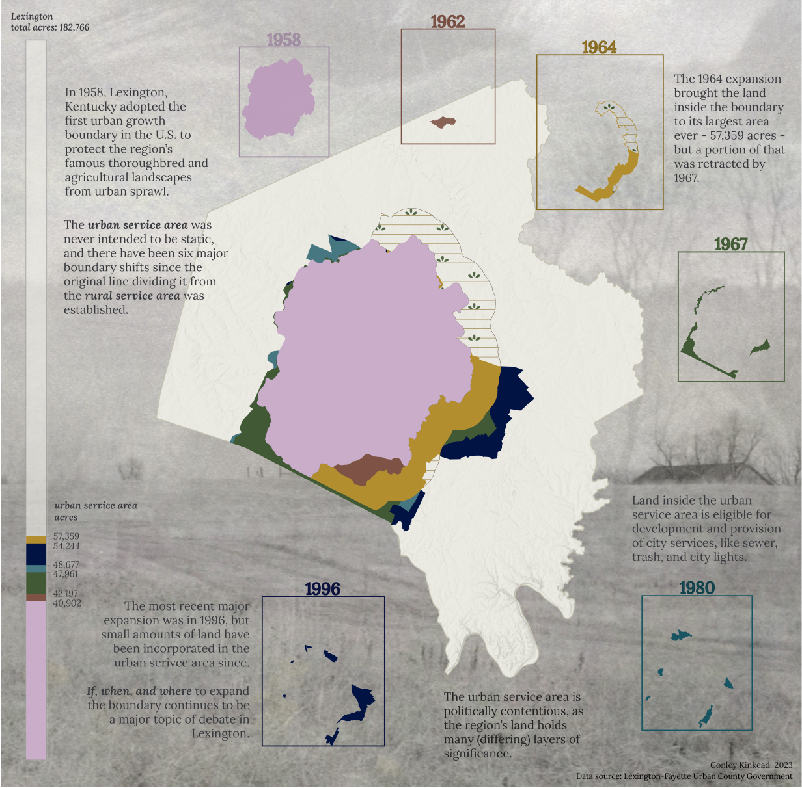

This narrative map of Lexington's Urban Service Area shows the expansion and retraction of the boundary over its six major iterations, with 1996 being the most recent year a major change occurred.
The dated rectangles surrounding the Lexington/Fayette County polygon contain clips visualizing the Urban Service Area's change for that year. The rectangle size is proportionate to the percentage of Lexington/Fayette County that the Urban Serivce Area covers.